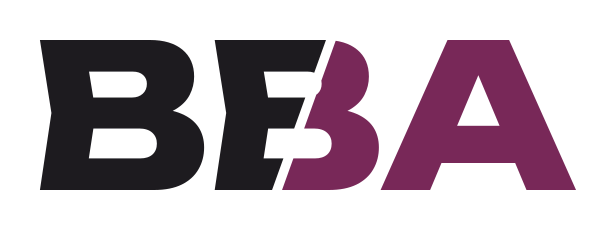
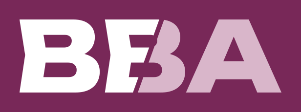
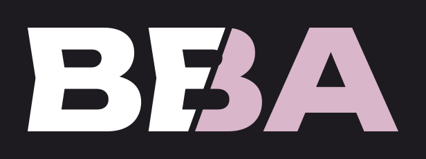
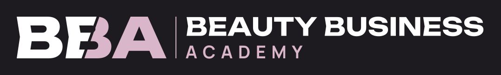
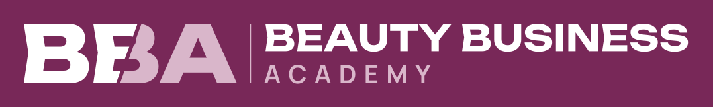
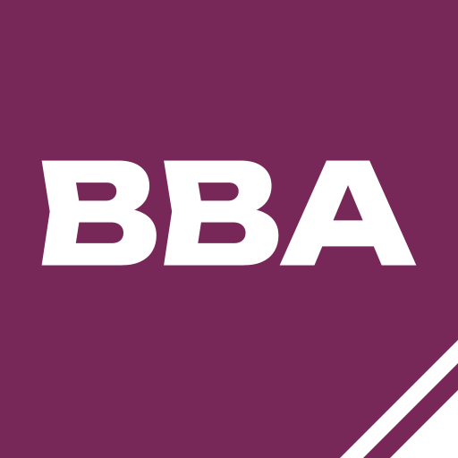
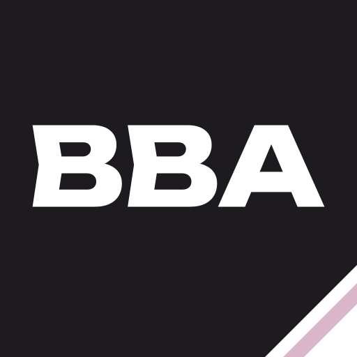
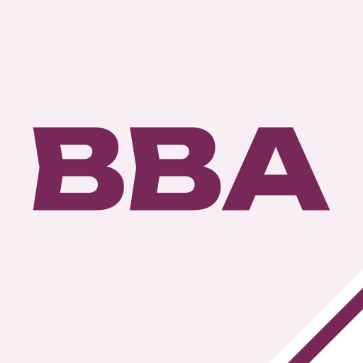
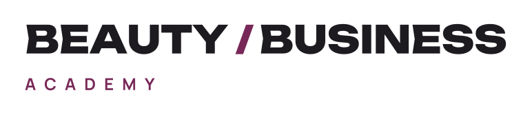
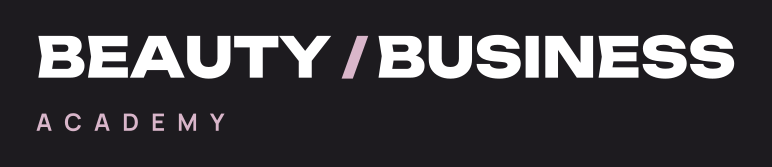

Beauty Business Academy — концепции логотипа
Построено только из выбранной системы: Unbounded для знака, Manrope для функциональной строки, палитра plum / charcoal / off-white / blush. Все буквы переведены в контуры из локальных OFL-шрифтов проекта.
01 · «Срез» — рекомендуемый основной знак
Монограмма BBA, рассечённая той же диагональю «/», что и граница в hero: левая часть — charcoal (практика), правая — plum (обучение). Один смысловой жест вместо декора.




02 · «Плитка» — иконка, favicon, аватар
Один срезанный угол с назначением: отрезанная часть возвращается отдельным штрихом, как у кнопки Cut. Для квадратных форматов.



03 · «Строка» — шрифтовой логотип
Без монограммы: слэш-параллелограмм между словами несёт фирменный приём и остаётся читаемым на высоте шапки.


В контексте шапки (демонстрация размера)
Пункты меню повторяют текущую шапку только для оценки масштаба.